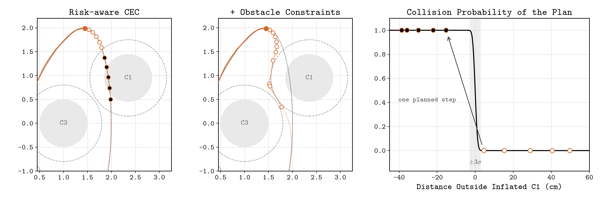
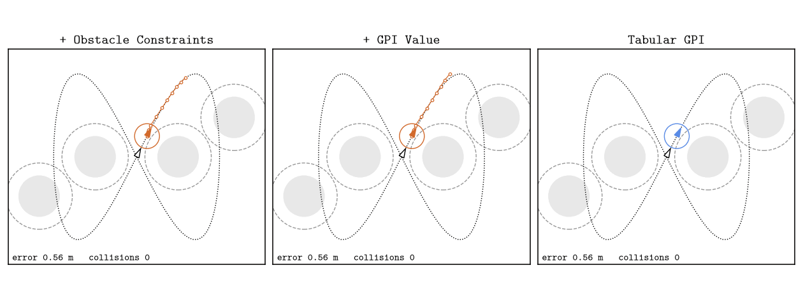
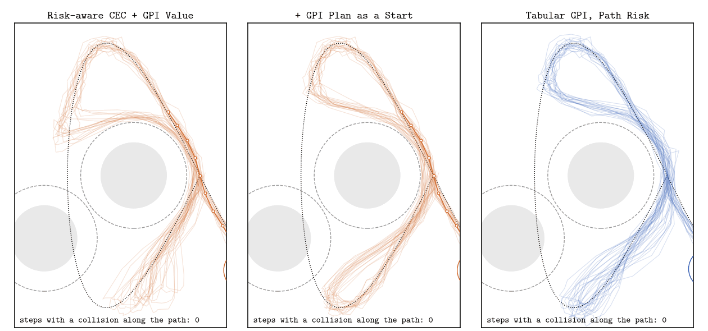

Safe Trajectory Tracking under Motion Uncertainty
In the third project of ECE 276B, a differential-drive robot has to follow a figure-eight past four circular obstacles, and every half-second Gaussian noise pushes it off the path it predicted. The assignment asks for two controllers. A certainty-equivalent controller (CEC) replans ten steps ahead as if there were no noise. Generalized policy iteration (GPI) solves a discretized MDP that includes the noise. After the course I kept working on one question: how much does it help a controller to know about the noise?
The answer turned out to depend less on the controllers than on a five-centimeter gap in the environment, and on when collisions are counted. CEC tracks the reference most closely and collides in every noisy episode. GPI keeps a margin, and an ablation says the margin comes from its calibrated collision probability. But giving CEC that same probability made it worse. While chasing the difference that remained, I found that part of GPI's safety was a loophole: it had learned to cross the gap at full speed, so that its two samples land on either side of it. This post follows the investigation in the order it happened.
The setup
The robot state is \(x_t = (p_t, \theta_t)\) and the control is \(u_t = (v_t, \omega_t) \in [0.1, 1] \times [-1, 1]\). The kinematics are integrated exactly over \(\Delta = 0.5\) s, then noise \(w_t \sim \mathcal N(0, \mathrm{diag}(\sigma)^2)\) with \(\sigma = (0.04, 0.04, 0.004)\) is added. With the tracking error \(e_t = (p_t - r_t,\ \theta_t - \alpha_t)\), the objective is
\[ V^*(\tau, e) = \min_\pi \ \mathbb E \Big[\sum_{t \ge \tau} \gamma^{t-\tau} \big(\tilde p_t^\top Q \tilde p_t + q (1-\cos\tilde\theta_t)^2 + u_t^\top R u_t\big)\Big] \quad \text{s.t.}\ \ \tilde p_t + r_t \in \mathcal F , \]where \(\mathcal F\) is the square \([-3,3]^2\) minus the obstacles inflated by the robot radius (0.5 + 0.3 = 0.8 m). Every method uses \(Q = 10 I\), \(q = 10\), \(R = 0.1 I\) and \(\gamma = 0.95\). I scale the noise by \(k \in \{0, 0.25, 0.5, 1, 2\}\) and run 200 episodes of 240 steps at each non-zero level. For a given seed, every controller sees exactly the same noise draws, so all comparisons are paired. GPI is trained separately for each noise level, with that level's noise model. A collision means a sampled robot position inside an inflated obstacle, as in the assignment. This definition comes back later.
How each controller works
CEC. A ten-step multiple-shooting NLP solved by IPOPT at every step, with the noise set to zero. The obstacle constraints \(\|p_k - c_i\|^2 + s_{ik} \ge 0.8^2\) use slack variables with an exact L1 penalty, so the problem stays solvable after noise has pushed the robot inside an obstacle. The NLP is built once, and each solve is warm-started from the previous solution.
Tabular GPI. The grid has 100 time steps × 29 × 29 position-error nodes (0.1 m spacing near zero, coarser farther out) × 40 heading nodes, which is 3.36 M states, with 110 controls. For every state–control pair, the next-state mean is combined with a 27-node Gauss–Hermite rule for the noise, and each node spreads its probability over the 8 vertices of its grid cell. Transitions are recomputed on the GPU during every sweep instead of being stored, so training fits in under 1 GB. Collisions enter the stage cost as \(\lambda \cdot P(\text{next position hits an obstacle})\) with \(\lambda = 1000\). Online, the controller does a one-step lookahead from the robot's exact continuous state.
Collision probability. For one obstacle, the probability that the next position lands inside the inflated disk is a non-central \(\chi^2\) CDF. The four inflated disks do not overlap, so their probabilities add exactly; a 0.5 mm lookup table keeps this fast on the GPU. The additive form matters in the gap: a noisy landing can hit the disk on either side. Treating the disks as independent events would put the one-step risk at the gap center at 45.7% instead of 51.0% (noise ×1).
RBF GPI. A third controller, from the assignment's optional part and discussed near the end, runs the same backups with a compressed value function: Gaussian kernels on a sub-lattice of the grid, 450 k weights (7.5× fewer than the table), fitted as a normalized-kernel averager so that the projected Bellman operator stays a contraction.
A five-centimeter gap
Before running any controller, I checked the geometry, and it turned out to matter more than anything else in the project. The reference passes inside the inflated obstacles C1 and C2, so perfect tracking means collision. Worse, the gap between inflated C1 and inflated C3 is only 5.1 cm, and C2 and C4 leave the same gap. At noise ×1, a single sample at the middle of that gap collides with probability 51%. A controller can either keep some margin inside the gap or leave the reference and take a longer route around C3.


CEC collides in every episode
| collision rate (%) | steps until first collision | ||||||
|---|---|---|---|---|---|---|---|
| noise | CEC | GPI | RBF | CEC | GPI | RBF | |
| ×0.25 | 100 | 0 | 4 | 28 | 240 | 235 | |
| ×0.5 | 100 | 5.5 | 44.5 | 27 | 235 | 188 | |
| ×1 | 100 | 41.5 | 91.5 | 24 | 190 | 102 | |
| ×2 | 100 | 20.5 | 100 | 19 | 219 | 40 | |
The first result looked like a clean trade-off. At noise ×1, CEC has the lowest tracking error (9.6 cm), ahead of tabular GPI (28 cm), but it reaches an obstacle after 24 steps on average, while GPI lasts 190. The most accurate way to follow this reference runs through an obstacle, so accuracy and safety pull in opposite directions.

The survival curves show why CEC fails so reliably: it loses about nine in ten episodes at its very first pass through the gap. Its optimum sits exactly on an active constraint, so symmetric noise pushes it across about half the time, however small the noise is. Even without noise it rides the constraint: its sampled clearance is exactly zero. At noise ×0.25, where CEC and GPI take the same route through every gap, the median minimum clearance is −1.7 cm for CEC and +2.1 cm for GPI; the collision rates are 100% and 0%.
GPI, on the other hand, changes its route as the noise grows. At noise ×0.5 it goes through every gap and collides in 5.5% of episodes. At ×1 it takes the inner detour on the right-hand lobe but keeps the left-hand gap, and collides in 41.5%. At ×2 it avoids every gap, and the collision rate falls to 20.5% even though the noise doubled; its tracking error rises from 9.9 to 28 to 50 cm across the three levels. One more detail that I did not think much of at the time: at ×0.5 and ×1, GPI crosses the gaps it uses at full speed.

Where does GPI's margin come from?
Tabular GPI uses the noise model in two places: in the Bellman transition (the expected value over noisy next states) and in the one-step collision probability. To see which one produces the margin, I retrained the noise ×1 policy with each part switched independently and evaluated all four on the same 200 episodes.
| Bellman transition | risk σ | collision rate (%) | collision steps |
|---|---|---|---|
| Gaussian | 4 cm | 41.5 | 0.51 |
| deterministic | 4 cm | 38.5 | 0.43 |
| Gaussian | 1 cm | 97.0 | 3.30 |
| deterministic | 1 cm | 98.5 | 3.74 |
Switching the transition noise on or off makes no measurable difference (paired exact McNemar p = 0.53). Setting the collision probability to the true noise level changes the selected route and removes most collisions (p < 10−30). With 10 cm grid cells and 4 cm of noise, averaging the noise over a piecewise-linear value barely changes it. So, at least on this grid, what matters is a correctly calibrated collision probability, propagated backward in time by dynamic programming.
CEC, of course, has no collision probability at all. The usual way to make it more careful is a safety margin: tighten every obstacle constraint by m.

It does not help at this noise level: every margin still collides in all 200 episodes. Beyond 2.5 cm (half the gap), the gap becomes infeasible, and the ten-step NLP either pushes through on its slack variables or stalls at the entrance, reaching 99 cm of tracking error at m = 10 cm. Sweeping GPI's risk weight λ instead moves the policy smoothly along a trade-off, from every gap at λ = 10 (83% collisions) to no observed collision at λ = 10,000 (47 cm of tracking error).
At this point the explanation seemed simple: GPI is safer because it knows the noise. That suggests a direct test, and it is where the project stopped going as I expected.
Giving CEC the noise model
The comparison so far mixes two differences: GPI knows the noise level, and GPI plans over an infinite horizon. To separate them, I gave CEC exactly GPI's stage cost, including the calibrated collision probability with the same \(\lambda = 1000\), and kept the rest of CEC: noise-free predictions, ten steps, and IPOPT warm-started from the previous plan. Along its prediction, this is the objective of the ablation's GPI with a deterministic transition, which was about as safe as the full policy (38.5% against 41.5%). So if knowing the noise is what matters, this risk-aware CEC should be about as safe as GPI.
The probability enters as a penalty, not as a constraint. Chance-constrained planners bound it instead (Blackmore et al., 2011; Zhu & Alonso-Mora, 2019), but with a fixed per-step noise level such a bound is just a margin, which had already failed: inside the gap no bound below 51% can be met.
| collision rate (%) | tracking error (cm) | ||||||||
|---|---|---|---|---|---|---|---|---|---|
| ×0.25 | ×0.5 | ×1 | ×2 | ×0.25 | ×0.5 | ×1 | ×2 | ||
| CEC | 100 | 100 | 100 | 100 | 5.6 | 6.9 | 9.6 | 15.8 | |
| risk-aware CEC | 100 | 81.5 | 100 | 96.5 | 2.2 | 31.5 | 80.2 | 101 | |
| + constraints | 0.5 | 79 | 100 | 96 | 6.4 | 41.4 | 79.3 | 98.3 | |
| + GPI value | 0 | 54.5 | 78 | 34 | 6.6 | 35.2 | 34.6 | 49.0 | |
| tabular GPI | 0 | 5.5 | 41.5 | 20.5 | 7.1 | 9.8 | 27.9 | 49.7 | |
It did not work. The first version made CEC worse: it collided in every episode at noise ×0.25, even though its tracking error fell to 2.2 cm, and in 81.5–100% of episodes at higher noise, with tracking errors up to a meter. Two separate problems turned out to be behind this.
Problem 1: the probability has no slope where the plan is. The collision probability of a sample rises from zero to one within about three standard deviations of the obstacle's edge, a 6 cm band at noise ×0.25. Near C1, consecutive predicted positions are about 17 cm apart, so a plan can put one position just before the band and the next deep inside it, where the probability is one and its gradient is zero. Nothing then pushes the plan back out, and the controller follows the reference straight through C1, 40 cm deep in the median episode; it does the same without any noise.

Keeping CEC's obstacle constraints on the noise-free positions restores a gradient everywhere, and with them the controller collides in 1 of 200 episodes at ×0.25, at 6.4 cm of tracking error.
Problem 2: ten steps are too short. At noise ×1, going through the gap costs about \(0.51\,\lambda\) per sample. Within a ten-step window, circling at the minimum speed looks cheaper, because falling behind the reference costs little at first. The robot falls up to 2.5 m behind at the passes of C1 and C2 and collides while catching up, in every episode. A longer window helps only partly (48.5% collisions with 20 steps, 80% with 40), because what happens after the window is still missing from the cost, and that missing cost is exactly GPI's value function. With the value as the terminal cost, as in POLO (Lowrey et al., 2019), the stall disappears and the tracking error falls to 35 cm.

Making GPI's value usable by IPOPT
GPI's table is multilinear between grid nodes, so its gradient jumps at every cell face, and with it as the terminal cost IPOPT mostly ran into its iteration limit. Instead, at every step I sample GPI's value on a window of 17 × 17 × 46 nodes around the planned end state (0.1 m and 9°, GPI's own spacing near the reference) and use the samples as the control points of a cubic B-spline. That spline has continuous second derivatives and stays within the range of the nearby table values, so the optimizer cannot exploit overshoot. A quadratic penalty outside the window works as a trust region, and the window moves with the plan.
With both fixes, the risk-aware CEC has GPI's objective, GPI's value beyond its horizon, and the same noise model. It still collides much more often than GPI: 54.5% against 5.5% at noise ×0.5 and 78% against 41.5% at ×1 (paired exact McNemar p < 10−13 at both levels). I expected the remaining difference to be about the route, but it was about speed. Both controllers cross the gaps at full speed; GPI gets there directly, while the risk-aware CEC first creeps up to the entrance, at 0.13 m/s on average over the three steps before a crossing against 0.54 m/s for GPI (noise ×0.5). So why does GPI cross the gaps at full speed?
What the samples miss
At noise ×0.5 and ×1, tabular GPI crosses every gap it uses at the maximum speed of 1 m/s, which is half a meter per step. Its two samples then land on either side of the 5 cm gap, and the collision check, which looks only at the samples, sees two safe positions. The gap itself is never checked.
To see what happens between the samples, I checked every step along its path: the noise-free arc from the sample, with that step's noise blended in linearly, at 21 points. Counted this way, GPI collides in 72.5% of episodes at noise ×0.5 instead of 5.5%, and in 84% at ×1 instead of 41.5%. At both levels, in every episode that collides along the path but never at a sample, the first such collision is at a gap crossing. The conclusion does not hinge on how the noise is blended in: the commanded arcs alone, without any noise, enter an obstacle in 62.5% of episodes at ×0.5 and 77% at ×1.

In hindsight, GPI optimized exactly what I asked for: its risk term scores only the next sample, and the policy found the loophole. Checking constraints only at discrete points is a known pitfall in trajectory optimization; TrajOpt, for example, checks the swept volume between waypoints (Schulman et al., 2014), and risk-bounded planners bound the collision probability over continuous time (Jasour et al., 2021). It also explains the speed gap from the previous section: dashing was not a quirk of GPI, it was the safest-looking thing to do under the rules.
The fix on GPI's side is a risk term that looks along the path. For every step it takes the largest collision probability at four points of the noise-free arc, with the noise growing linearly over the step (standard deviation \(s\sigma\) at fraction \(s\) of the step). For a full-speed dash through the middle of the gap, this doubles the step's risk at noise ×1 and multiplies it by nine at ×0.5. I retrained GPI with it at every noise level, about three minutes per policy.

With the path-aware risk, GPI changes its decision where the loophole mattered most: at noise ×1 it detours around both lobes and collides along the path in none of the 200 episodes (against 84%), at 44 cm of tracking error instead of 28. At ×0.5 it keeps the gaps, but now it prices them honestly: at a crossing it predicts a 12.5% chance of a collision along the path and realizes 18%, and over an episode it collides along the path in 64%. At this noise level, a penalty of \(\lambda = 1000\) simply does not make the detour worth it. CEC, with its constraints extended to four points along each step, still collides along the path in every episode.
Handing CEC the route
With the loophole closed, I went back to the original question and gave the risk-aware CEC the path-aware risk in both its stage cost and GPI's value. At noise ×1 it now takes the same detours as GPI and collides along the path in 8% of episodes, at 41 cm of tracking error. The remaining failures are on the left-hand lobe, where it follows the reference down the outer side before turning back, while GPI turns at the top. GPI's value says the outer side is a dead end, but a local optimizer only compares plans near its warm start, and turning at the top is a different homotopy class. Topology-aware planners keep several such candidates (Rösmann et al., 2017); here the natural second candidate is GPI's own plan. At every step, IPOPT also starts from ten steps of the GPI policy, and the controller keeps the cheaper solution. I'll call this the hybrid.

At noise ×1 the hybrid collides along the path in 4% of episodes and tracks 9 cm closer to the reference than path-aware GPI (35 against 44 cm, closer in every one of the 200 paired episodes). At ×0.25 and ×0.5 it is both safer and closer: 0.5% against 11% and 52% against 64% of episodes with a collision along the path, at 6.5 against 10.0 cm and 8.4 against 12.9 cm. The noise ×1 result holds on seeds used nowhere else in this post.
| seeds 0–199 | seeds 1000–1199 | |||||
|---|---|---|---|---|---|---|
| noise ×1 | samples (%) | path (%) | error (cm) | path (%) | error (cm) | |
| CEC | 100 | 100 | 9.6 | 100 | 9.6 | |
| GPI, sample risk | 41.5 | 84 | 27.9 | 85 | 28.0 | |
| GPI, path risk | 0 | 0 | 44.3 | 0 | 44.2 | |
| hybrid | 3.5 | 4 | 35.2 | 2 | 35.2 | |
At ×2, however, the hybrid fails: 72% against 20.5%. The reason is that its predictions are noise-free, like every CEC here. GPI with noise-free transitions and the same path-aware risk shows the same pattern, 42% at ×2 against 20.5% with noisy transitions (paired p = 6 × 10−7), and starting IPOPT only from GPI's plan makes it worse, not better (81%). This is the case the earlier ablation could not see: once the risk looks along the path and the noise reaches 8 cm per step, the noise in the transition matters after all.

Sweeping the penalty compares them at matched safety. With \(\lambda = 10\) or 100, every controller takes the gaps and collides along the path in 98–100% of episodes. At \(\lambda = 1000\), the hybrid and path-aware GPI are nearly equally safe (4% and 0%), and the hybrid tracks 9 cm closer; at \(\lambda = 10{,}000\) the hybrid falls behind (35% against 0%). The refinement is not cheap either: 272 ms per step on average, within the 500 ms control period, against 2.7 ms for path-aware GPI.
A side note: compressing the value function
The assignment's optional third part replaces GPI's table with a linear combination of radial basis functions. My version stores 450,000 weights instead of 3.36 million table entries. It costs safety at every noise level: 44.5% against 5.5% collisions at noise ×0.5, and 91.5% against 41.5% at ×1.

The table jumps sharply at the obstacle edge, and averaging smooths that edge away, which erases the small difference between "through the gap" and "around it". A plain least-squares fit fails differently: every cost is non-negative, yet fitted policy iteration converges to a value function that is negative on 76% of states. A smooth fit blurs the value function; a non-contractive fit converges to the wrong one.
Other checks: starting phase and compute
The default episode starts the robot two reference steps ahead of its clock (a 0.56 m initial error) and runs for 2.4 periods of the figure-eight. From four other starting phases, with the robot exactly on the reference and exactly two periods each, CEC collides in all 200 episodes from every phase, tabular GPI in 42–50.5%, and RBF GPI in 82.5–86%; the differences between phases are within the 95% intervals.

Online, CEC needs 5.36 ms per step, tabular GPI with a one-step lookahead 1.26 ms, and RBF GPI 1.23 ms (single process, mean over three episodes), all far below the 500 ms control period. GPI moves the hard work offline: one sweep over the 3.36 M-state grid takes about 8.5 s on an L40S, and a full policy takes a few minutes.
So, does knowing the noise help?
For CEC, knowing the noise was not enough on its own. It needed the calibrated risk, a constraint to give that risk a gradient, GPI's value to see past its horizon, and GPI's plan to change route. With all four it is safer than path-aware GPI at low noise and nearly as safe at noise ×1, and it tracks closer at every noise level; at noise ×2 its noise-free predictions cost it that safety. In the end, global planning chose the route and local optimization refined it.
The part I did not expect was how much of the original story depended on the collision check. GPI's low collision rates at moderate noise looked like the payoff of a well-calibrated risk, and they partly were, but they also came from a policy that learned exactly where the check does not look. None of the aggregate numbers showed this. It only surfaced because two controllers with the same objective crossed the same gap at very different speeds, and I asked why.
What this does and does not show
- The results are for one simulated layout with i.i.d. Gaussian noise, not guarantees for a physical robot.
- The discrete-time model does not define the motion between samples; the path check is one reasonable reading, and the four-point path-aware risk can only underestimate it.
- The hybrid is not a standalone CEC: it relies on GPI's offline value function and policy, and a different local optimizer might need less help.
- The λ sweeps and most checks reuse seeds 0–199; only the headline controllers were rerun on unseen seeds 1000–1199.
Code and data
Everything is at github.com/jnsungp/safe-trajectory-tracking: the controllers, the GPU implementation of GPI, the experiment runner, the analysis and figure scripts, and the aggregate results behind every number in this post.
Built on the starter code of ECE 276B (Nikolay Atanasov, UC San Diego).